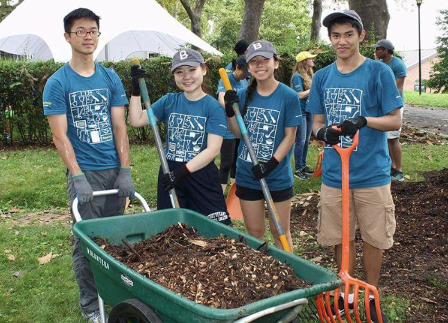
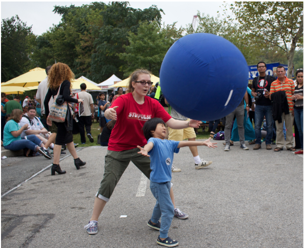

|  |
VolunteeringStuyPulse has many volunteering events throughout the community. We send many members to Bloomberg events in Park Restoration and community events around the city. We try to give back as much as possible, and spread the word of STEM and our team in the process.Learn More > |
|  |
MentoringStuyPulse recognizes the position they are in, and spreads the word of STEM around by their volunteering efforts, with First Lego League teams made up of elementary schoolers, to international teams in the First Global Competition, like team Hope, the team of Syrian Refugees.Learn More > |

|
OutreachStuyPulse has many outreach initiatives within our community. We host events like StuySplash, a series of free STEM workshops, and go to Maker Faire to spread the word of our team, FIRST, and STEM. We have an annual book sale on our street corner, and even hold a "mini-Maker Faire" at a neighborhood Barnes and Noble's.Learn More > |